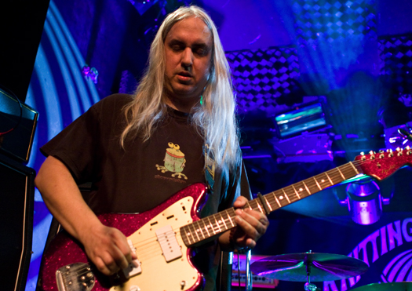
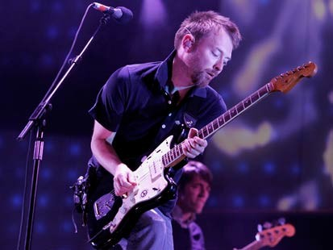
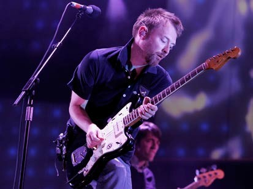
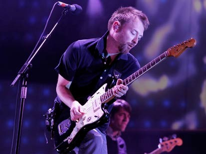

Jazzmaster
| Korpus | Gryf | Podstrunnica | Menzura | Przetworniki | Mostek |
|---|---|---|---|---|---|
| olcha jesion lipa |
klon | palisander klon |
25,5 cala | 2x single coil | Floating Tremolo |
Jazzmaster został przedstawiony w 1958 roku na NAMM Show, największych na świecie targach muzycznych, odbywających się w Kalifornii. Miała być bardziej ekskluzywną wersją modelu Stratocaster. Jak nazwa wskazuje, miał być instrumentem przeznaczonym głównie dla muzyków jazzowych i bluesowych, jednak znacznie częściej sięgali po nią muzycy grający surf rocka oraz muzykę alternatywną (m.in. The Beach Boys i Sonic Youth).
Zaprojektowany korpus został nawany „offset”. Jego wyprofilowany kształt miał zapewniać wygodę głównie w pozycji siedzącej, ponieważ tak grało wielu muzyków jazzowych. Drewno użyte do wykonania korpusu i gryfu było prawie identyczne jak w poprzednich modelach. Zastosowano w niej bardzo ciekawy układ przetworników. Działa on jako 2 niezależne od siebie pętle rythm i lead, które są obsługiwane odpowiednimi przełącznikami. Użyte przystawki single-coil, zaprojektowane podobnie jak P-90 firmy Gibson, dają bardzo ciepłe i głębokie brzmienie.
Użyto również innego niż w Stratocasterze systemu tremolo, nawanego Floating. Jego zasada działania polega na poruszaniu tylko i wyłącznie strunami, a nie całym mechanizmem jak w Stratocasterze.
Jazzmaster nie uzyskał popularności Tele i Strata, jednak jest bardzo popularnym modelem w kręgach muzyków alternatywnych, z powodu niższej ceny po wycogfaniu z produkcji oraz nietypowych właściwości brzmieniowych.
Znani użytkownicy

") 


© 2016 Łukasz Karczewski. Wszelkie prawa zastrzeżone.